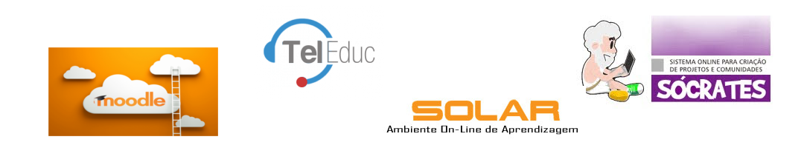
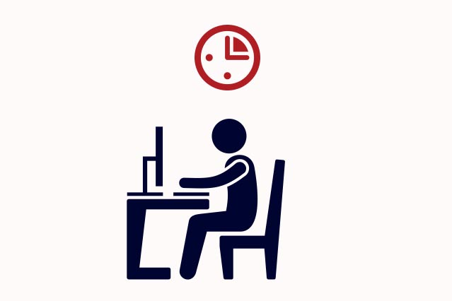

Ambientes virtuais de aprendizagem
Acadêmicos:
- Hadyne Biazoto RA:84261
- Rafael Biazus Mangolin RA:84261
O que são Ambientes Virtuais de Aprendizagem?
Ambientes Virtuais de Aprendizagem
- É um software que auxilia na montagem de cursos acessíveis pela internet.
Ambientes Virtuais de Aprendizagem
- Possui ferramentas que permite a interação entre alunos e professores.
Exemplo: - Chats - Blogs - Calendario de Atividades - Segregação de materías
Ambientes Virtuais de Aprendizagem
- Tem o objetivo de auxiliar os professores no gerenciamento de conteúdos, na administração do curso e no acompanhamento do progresso de seus alunos. - São usados para complementar aulas presenciais na EAD.
Ambientes Virtuais de Aprendizagem
Exemplos:
- Moodle - TelEduc - Solar - Socrates
EAD
Evolução do EAD
A EAD no Brasil, começou no inicio do século XIX por envios de carta, pelo correio.
Evolução do EAD
Com o passar do tempo, a EAD foi evoluindo e utilizando as novas formas de tecnologia
Evolução do EAD
Apenas no final do século XIX que a EAD tornou-se mais atrativa (graças a internet).As perspectivas de ampliação e o crescimento aumentaram significativamente,junto com as facilidades proporcionadas por esta tecnologia.
Vantagens dos AVAs

Vantagens dos AVAs
O professor pode dar atenção individual ao aluno, por atendimento em um chat, ou mesmo em blogs.
Vantagens dos AVAs
A possibilidade do aluno controlar seu próprio ritmo de aprendizagem, assim como a sequência e o tempo
Vantagens dos AVAs
A apresentação dos materiais de estudo de modo criativo,atrativo, estimulando e motivando a aprendizagem
Vantagens dos AVAs
A possibilidade de ser usada para avaliar o aluno, e seu interresse com o curso por meio de:
- Paginas visitadas - Tempo de permanencia - interação com outros alunos
Vantagens dos AVAs
Os AVAs rompem os limites da sala de aula presencial e favorecem a formação de comunidades virtuais de aprendizagem.
Ética em AVAs
Ética em AVAs
A interação entre o professor e o estudante, na maior parte das vezes, ocorre de modo indireto e não simultâneo. A autonomia do aluno é essencial nesta modalidade de ensino.
Ética em AVAs
O processo de ensino a distância deve ser centrado no estudante, deixando ele moldar os conteudos que eles irão absorver
Ética em AVAs
O aluno tem que ser capaz de auto-dirigir e auto-regular o seu processo de aprendizagem e apresentar como características: - Maturidade - Motivação - Habilidades de estudo
Ética em AVAs
A disposição deva ser total, exigindo perseverança e disciplina, a organização do tempo e, sobretudo a motivação e senso de responsabilidade
Ética em AVAs
Eles servem de ajuda para que o aluno possa conscientemente, diante da possibilidade de optar, agir corretamente, ou seja, de acordo com o seu dever.
"A menos que realizemos nossos deveres para conosco mesmos, não podemos
realizar devidamente nossos deveres para com os outros... Age de tal modo
que a máxima da tua vontade possa valer sempre como princípio de uma
"
legislação universal. (KANT, 1959)
Referências:
- http://www.comunidadesvirtuais.pro.br/hipertexto/home/ava.pdf - http://www.ufrgs.br/nucleoead/documentos/costaAmbientes.pdf - http://www.abed.org.br/revistacientifica/Revista_PDF_Doc/2010/2010_2462010174147.pdf - http://www.lami.pucpr.br/newsletter/site_news/artigo0104a.php - http://www.abed.org.br/congresso2007/tc/4162007104526AM.pdf